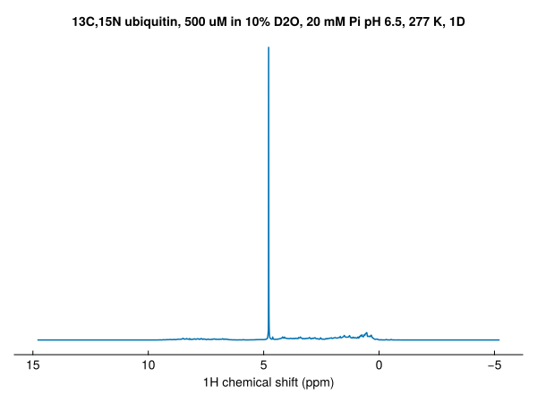
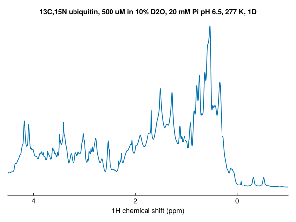
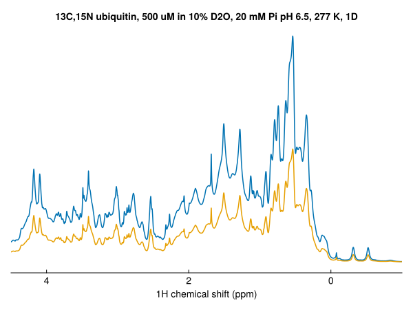
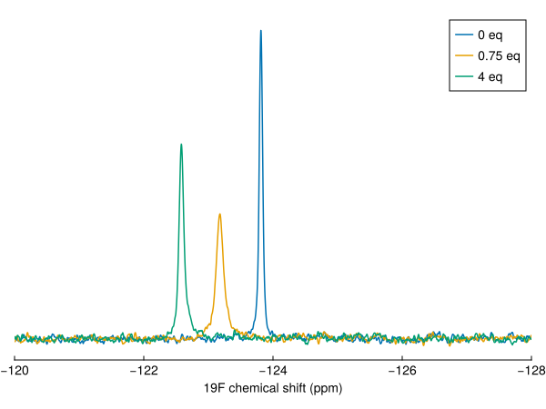
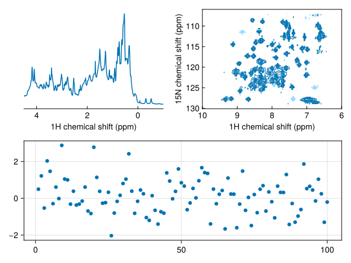

Plot 1D spectra
nmrplot and nmrplot! plot spectra with Makie. Load NMRTools and a Makie backend:
using NMRTools
using CairoMakie # static figures; use GLMakie for interactiveSeveral behaviours differ from plain Makie to match NMR conventions:
- Titles come from the spectrum's label (set from the title file on load). Pass
title=""to suppress ortitle="My title"to override. - Axes are reversed (high ppm on the left/bottom) and labelled automatically from dimension metadata.
xlims/ylimsare passed directly tonmrplotrather than callingxlims!(ax, ...)afterwards. For 1D plots the y-axis rescales to fit the displayed region.- Contour levels for 2D spectra are set automatically from the noise level (starting at 5σ, geometric spacing of 1.7). The keyboard can be used to raise or lower them interactively (see below).
- Legends are disabled by default. When enabled, entries are named automatically from spectrum labels.
A single spectrum
fig = nmrplot(exampledata("1D_1H"))
Set the plot range with xlims — the y-axis rescales to fit the visible region:
fig = nmrplot(exampledata("1D_1H"), xlims=(-1, 4.5))
Overlay additional spectra with nmrplot!:
nmrplot!(fig, exampledata("1D_1H") / 2)
1D spectra can be stacked by passing the argument vstack=true, or vstack=X where X controls the spacing:
fig = Figure()
nmrplot(fig[1,1], exampledata("1D_19F_titration"), xlims=(-121.8,-125.2), vstack=true, title="vstack=true")
nmrplot(fig[1,2], exampledata("1D_19F_titration"), xlims=(-121.8,-125.2), vstack=2, title="vstack=2")
nmrplot(fig[1,3], exampledata("1D_19F_titration"), xlims=(-121.8,-125.2), vstack=10, title="vstack=10")
Overlays built one at a time
Add spectra one by one with nmrplot!, and add a legend with Makie's axislegend:
dats = exampledata("1D_19F_titration")
fig, ax = nmrplot(dats[1], title="", xlims=(-120, -128))
nmrplot!(fig, dats[5])
nmrplot!(fig, dats[10])
axislegend(ax)
Normalisation
By default spectra are scaled by their number of scans and receiver gain, so spectra recorded with different settings can be compared. Pass normalize=false for raw intensities.
Saving figures
Makie figures can be saved using GLMakie or CairoMakie as png files:
save("spectrum.png", fig)
save("spectrum.png", fig; px_per_unit=2) # 2× resolutionTo save figures as vector graphics (pdf or svg), switch to CairoMakie:
using CairoMakie
save("spectrum.svg", fig) # vector graphics
save("spectrum.pdf", fig)Layout and composition
nmrplot accepts a GridPosition to place spectra into a shared figure alongside other Makie plots:
fig = Figure()
nmrplot(fig[1, 1], exampledata("1D_1H"); title="", xlims=(-1, 4.5))
nmrplot(fig[1, 2], exampledata("2D_HN"); title="", xlims=(6, 10))
scatter(fig[2, :], randn(100))
Axis properties can be customised after the fact via the returned ax handle, or passed up-front via the axis keyword:
fig, ax, plt = nmrplot(spec)
ax.title[] = "My spectrum"
# equivalently:
fig = nmrplot(spec; axis=(; title="My spectrum"))See Makie plot options for every keyword.